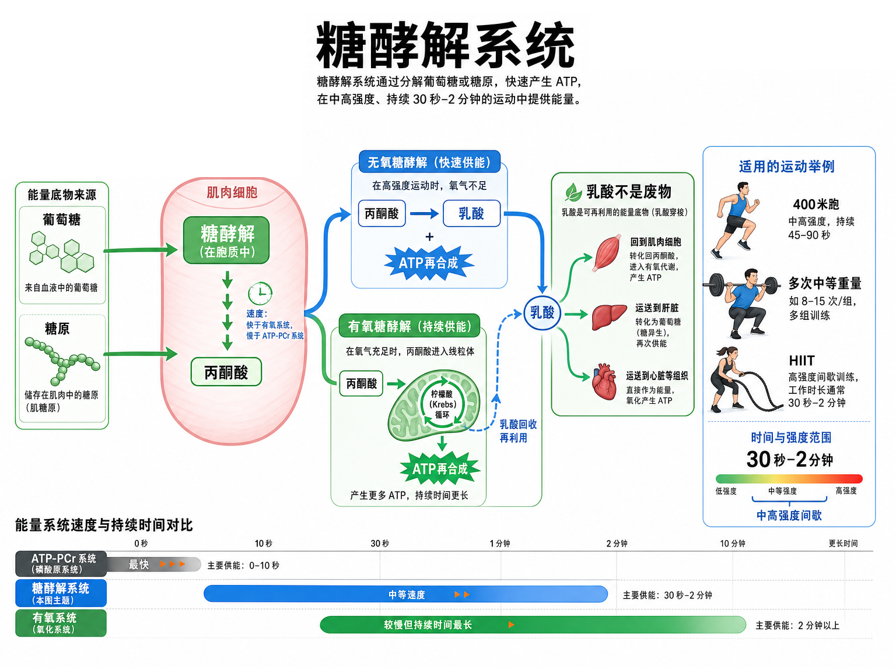

Day 23 · 能量系统-糖酵解系统
一句话总结
糖酵解系统像肌肉的快拆厨房: 它把葡萄糖或肌糖原快速拆开来再合成 ATP，速度比氧化系统快、持续时间比 ATP-PCr 长，特别适合 400 米跑、HIIT 和多次中等重量训练。乳酸不是废物，它更像一张“高强度账单”和可回收燃料。

核心要点
-
糖酵解系统: 把葡萄糖或肌糖原拆成更小分子，快速再合成 ATP。
先抓结论: 糖酵解不是“吃糖马上变力量”，而是把糖拆成中间产物，再把能量换成肌肉真正能用的 ATP。底层机制
字面意思
糖酵解 = glucose/glycogen 进入一串酶促反应，被拆成丙酮酸，同时快速产生少量 ATP。
大白话
像后厨快速切菜出餐，量不如慢炖多，但比慢炖快很多，能顶住中高强度几分钟内的需求。
考试含义
题干出现 30 秒-2 分钟、400 米、8-15 次多组、腿酸和中高强度间歇，优先联想糖酵解。
肌肉最终还是要用 ATP 驱动横桥循环。糖酵解把葡萄糖拆成丙酮酸，同时让 ADP 重新变回 ATP。它不如 ATP-PCr 那样瞬间，但库存更大；不如氧化系统持久，但速度更快。
训练含义中等偏高次数、短到中等休息、400 米跑和搏击回合，常把身体推到糖酵解主导区。训练感觉通常是呼吸急、局部灼烧、速度开始掉。
-
无氧糖酵解: 氧气供不上时，丙酮酸更容易转成乳酸，仍可快速供能。
先抓结论: “无氧”不是没有呼吸，而是当下供能速度太快，氧化路线跟不上，只能先走更快的糖酵解路线。
真实例子步骤 发生什么 训练感觉 拆糖 葡萄糖或肌糖原进入糖酵解，产生 ATP 和丙酮酸。 中高强度还能继续顶。 转乳酸 当强度高、线粒体处理速度不够时，丙酮酸更多转成乳酸。 局部灼烧感和掉速开始明显。 继续周转 乳酸可被其他肌纤维、心脏或肝脏再利用。 停下后逐渐恢复，不是“毒素排出”。 400 米跑后段、1 分钟冲刺自行车、连续壶铃摆动、12 次左右接近力竭的深蹲，都可能明显依赖无氧糖酵解。
常见误解❌以为无氧糖酵解等于完全不需要氧气。✅其实身体仍在呼吸，氧化系统也在工作，只是高强度下糖酵解贡献更突出。
-
有氧糖酵解: 氧气足够时，丙酮酸进入线粒体，继续走三羧酸循环。
先抓结论: 同样从糖开始，后面可以分路。强度没那么高、氧气能跟上时，丙酮酸更适合进入线粒体继续“慢炖”。真实例子
字面意思
丙酮酸进入线粒体，变成乙酰辅酶 A，再进入 Krebs cycle，也叫三羧酸循环。
大白话
先把糖切成小块，再送进更大的发电厂慢慢榨出更多 ATP。
为什么重要
它解释了为什么强度降低或训练水平提高后，同样速度下乳酸堆积会更少、维持时间更长。
配速跑、较长间歇的恢复段、稳定中等强度有氧，都在用糖的有氧路线。它不像 ATP-PCr 那么快，但 ATP 产量更高、持续更久。
常见误解❌以为糖酵解只属于“无氧系统”。✅其实糖酵解先把糖拆成丙酮酸，之后走无氧还是有氧，取决于强度、氧供和线粒体处理能力。
-
乳酸阈: 乳酸产生速度超过清除速度时，血乳酸开始明显堆积。
先抓结论: 乳酸阈不是“突然中毒点”，而是产出和清除失衡的转折区。超过它越多，掉速越快。
底层机制状态 身体在做什么 训练判断 低于阈值 乳酸产生可被较快清除和再利用。 能稳定说短句，持续较久。 接近阈值 产生和清除接近平衡。 强度有压力，但可控，常用于阈值训练。 高于阈值 产生明显超过清除，代谢压力快速上升。 呼吸急、腿沉、速度难维持。 阈值受糖酵解速度、线粒体能力、毛细血管供血、乳酸转运和训练水平影响。训练越好，身体越能把乳酸快速搬运并再利用。
常见误解❌以为乳酸阈就是乳酸开始出现。✅其实休息时也有乳酸；阈值说的是“明显堆积”，不是“从零开始”。
-
乳酸不是废物: 乳酸能被心脏、肌肉和肝脏重新利用，是可回收燃料。
先抓结论: 把乳酸当垃圾会误导训练。它更像快递单：说明高强度拆糖很快，也能被送到别处继续用。真实例子
字面意思
乳酸是糖酵解产物之一，可在血液中运输，也可被其他组织氧化利用。
大白话
不是垃圾桶里的废料，而是还没用完的能量包裹，被身体转运给需要它的地方。
考试含义
看到“乳酸导致酸痛”要警惕。延迟性酸痛更多与微损伤和炎症反应有关，不是乳酸停在肌肉里几天。
高强度间歇后，轻松慢走或低强度骑车能促进血流和乳酸转运。它不是“排毒”，更准确说是帮助身体把可利用底物搬走并处理。
常见误解❌以为腿酸全是乳酸腐蚀肌肉。✅其实灼烧感和疲劳来自多因素，包括氢离子、无机磷、神经输出下降、离子环境变化和局部供能压力。
-
训练适用: 糖酵解最适合中高强度、持续 30 秒到 2 分钟的重复输出。
先抓结论: 判断供能系统，先看“多猛”和“持续多久”。糖酵解常站在 ATP-PCr 和氧化系统中间。
训练含义训练场景 主导倾向 理由 1 次最大硬拉 ATP-PCr 时间太短，峰值功率最高。 400 米跑 糖酵解明显 持续约 45-90 秒，高强度且不能完全靠 PCr。 8-15 次多组深蹲 糖酵解参与高 中高强度重复输出，局部代谢压力上升。 长距离慢跑 氧化系统 时间长、强度相对低。 想提高糖酵解能力，可用中高强度间歇、较短休息的循环训练、或中等重量多组训练。但如果目标是最大力量，过多糖酵解疲劳会干扰峰值输出。
常见误解❌以为越酸越有效。✅酸只是代谢压力线索之一。增肌还需要足够机械张力、训练量和恢复；体能还需要可重复的高质量输出。
常见误区
❌很多人以为乳酸是废物。✅其实乳酸能被心脏、肌肉和肝脏再利用，训练里更该理解为可转运燃料和强度信号。
❌很多人以为糖酵解只在完全无氧时工作。✅其实三大供能系统一直同时工作，只是主导比例随强度和时间改变。
❌很多人以为腿酸等于一定练到位。✅其实腿酸可来自代谢压力，但动作质量、目标肌张力和恢复是否匹配更关键。
记忆口诀
十秒靠 PCr，两分钟看糖；乳酸不是脏，阈值看收放。意思是：极短爆发先想 ATP-PCr；30 秒到 2 分钟中高强度先想糖酵解；乳酸能回收再用；阈值看产生和清除谁更快。
翻转卡复习
实操关联
- 增肌: 8-15 次多组训练会明显调用糖酵解，但仍要保证目标肌张力，不要只追求酸胀。
- 减脂: HIIT 可提高单位时间消耗和 EPOC，但强度高、恢复成本高，不能天天硬堆。
- 爆发: 真正练峰值速度时，应避免让糖酵解疲劳太重；速度掉太多就不再是爆发训练。
- 耐力: 阈值训练能提高乳酸产生和清除平衡点，让同样配速下更不容易堆积。
- 康复: 早期不要急着上高糖酵解压力训练；先恢复动作质量、局部耐受和基础有氧。